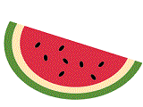

The Minimalist Camera
2018

Trapping Light for Time of Flight
2018
Stretchcam: Zooming Using Thin, Elastic Optics
2017
Cambits: A Reconfigurable Camera System
2016 – 2017
DisCo: Displays that Communicate
2014 – 2016
Flexible Sheet Cameras
2016
Extended Depth of Field Catadioptric Imaging Using Focal Sweep
2015
SpeDo: 6 DOF Ego-Motion Sensor Using Speckle Defocus Imaging
2015
Phasor Imaging
2015
Self-Powered Camera
2015
Video from a Single Coded Exposure Photograph
2011 – 2014
Fibonacci Exposure Bracketing for HDR Imaging
2013
Structured Light in Sunlight
2013
Bigshot: A Digital Camera for Education
2013
Focal Sweep Videography with Deformable Optics
2013
Focal Sweep Camera (Fosera)
2012
When Does Computational Imaging Improve Performance?
2012
Diffuse Structured Light
2012
What is a Computational Camera?
2006 – 2011
Gigapixel Computational Imaging
2011
Diffusion Coded Photography for Extended Depth of Field
2010
Depth from Diffusion
2010
Coded Rolling Shutter Photography
2010
Generalized Assorted Pixel Camera
2008 – 2010
Flexible Depth of Field Photography
2008 – 2010
Spectral Focal Sweep for Extending Depth of Field
2010
Removing Dirty Camera Lens Artifacts
2009
Coded Aperture Pairs for Depth from Defocus
2009
What are Good Apertures for Defocus Deblurring?
2009
True Spherical Camera
2009
Compressive Structured Light for Participating Media
2008
Capturing Photos and Videos with Tagged Pixels
2008
Cata-Fisheye Camera for Panoramic Imaging
2008
Flexible Mirror Imaging
2007
Multispectral Imaging Using Multiplexed Illumination
2007
High Dynamic Range Imaging: Assorted Pixels
1999 – 2007